Môn Toán - Lớp 12
Question 1. Cho hàm số $y = f(x)$ có đồ thị như hình vẽ bên. 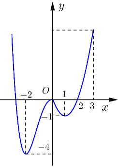 Hàm số đã cho nghịch biến trên khoảng nào trong các khoảng được chỉ ra dưới đây?
Question 2. Cho hàm số $y = \frac{x+1}{x-1}$. Mệnh đề nào dưới đây đúng?
Question 3. Cho hàm số $y = f(x)$ có đồ thị trong hình bên. Mệnh đề nào dưới đây đúng? 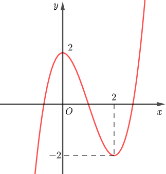
Question 4. Cho hàm số $y = f(x)$ có đồ thị như hình vẽ. Hàm số đồng biến trên khoảng? 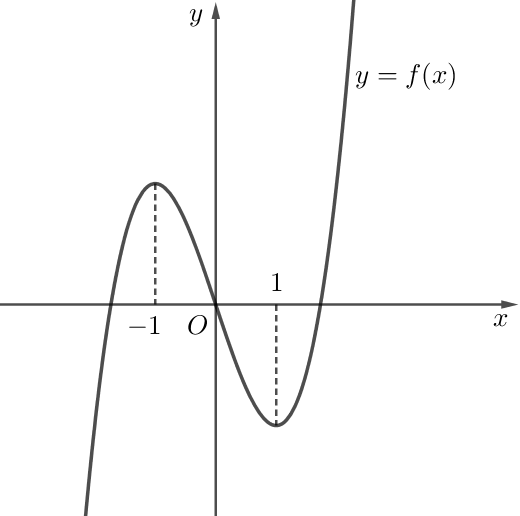
Question 5. Cho hàm số $y = f(x)$ liên tục trên $\mathbb{R}$ và có bảng xét dấu của $f'(x)$ như sau: 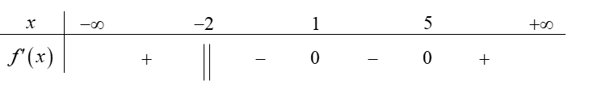 Tìm số điểm cực trị của hàm số đã cho.
Question 6. Hình vẽ bên dưới là đồ thị của hàm số nào?
Question 7. Cho hàm số $y = f(x)$ liên tục trên $\mathbb{R}$ và có bảng xét dấu của đạo hàm như hình vẽ. 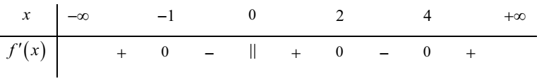 Hàm số $y = f(x)$ có bao nhiêu điểm cực trị?
Question 8. Cho hàm số $y = \frac{x^2+x-1}{x-1}$ xác định, liên tục trên $\mathbb{R}$ và có đồ thị như hình bên dưới. 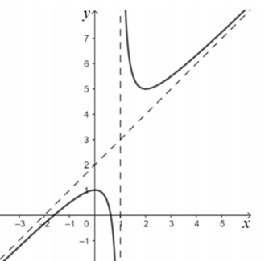 Đường cong nào dưới đây là đồ thị của hàm số $y = \left|\frac{x^2+x-1}{x-1}\right|$
Question 9. Hàm số $y = (x^2 -1)(3x-2)^3$ có bao nhiêu điểm cực đại?
Question 10. Cho hàm số $y = f(x)$ có đạo hàm $f'(x)=x^2(x+1)(x-2)^3$, $\forall x \in \mathbb{R}$. Hỏi hàm số đã cho có bao nhiêu điểm cực đại?
Question 11. Tập hợp tất cả các giá trị của tham số $m$ để hàm số $y = x^3 + (m+1)x^2 + 3x + 2$ đồng biến trên $\mathbb{R}$ là
Question 12. Một hợp tác xã nuôi cá thí nghiệm trong hồ. Người ta thấy rằng nếu trên mỗi đơn vị diện tích của mặt hồ có $n$ con cá thì trung bình mỗi con cá sau một vụ cân nặng $P(n) = 480-20n$ (gam). Hỏi phải thả cá trong khoảng nào trên một đơn vị diện tích của mặt hồ để số gam tăng?
Question 13. Cho hàm số $y = f(x)$ có đạo hàm trên $\mathbb{R}$. Đồ thị của hàm số $y = f'(x)$ được cho trong hình dưới đây. Xét tính đúng, sai của mỗi khẳng định sau: 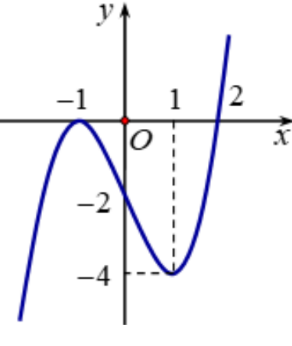
Question 14. Cho hàm số $y = f(x)$ xác định và liên tục trên $\mathbb{R}$, có bảng biến thiên như hình vẽ: 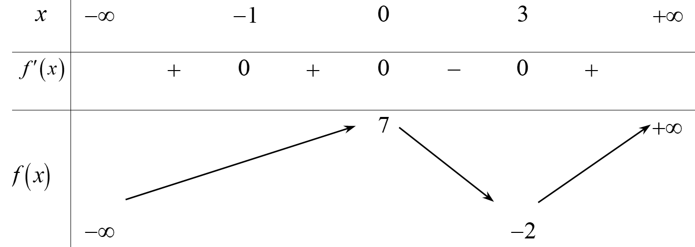 Các mệnh đề sau đúng hay sai?
Question 15. Nhân ngày quốc tế Phụ nữ 8 – 3 năm 2024. Ông M đã mua tặng vợ một món quà và đặt nó trong một chiếc hộp chữ nhật có thể tích là 32 (đvtt) có đáy là hình vuông và không nắp. Để món quà trở nên đặc biệt và xứng tầm với giá trị của nó, ông quyết định mạ vàng chiếc hộp, biết rằng độ dày của lớp mạ trên mọi điểm của chiếc hộp là không đổi và như nhau. Gọi chiều cao và cạnh đáy của chiếc hộp lần lượt là $h$ và $x$.
Question 16. Cho hàm số $y = x^3 - 3x +1$. Xét tính đúng hoặc sai của các mệnh đề sau:
Question 17. Cho hàm số $f(x) = x^3 +3x-4$. Gọi $M,m$ lần lượt là giá trị lớn nhất, giá trị nhỏ nhất của hàm số $f(x)$ trên đoạn $[1;3]$. Tính $M + m$.
Question 18. Biết hàm số $y = -x^4+2x^2 +1$ có tất cả các khoảng nghịch biến là $(a;b)$ và $(c;+\infty)$. Tính $a+2024b+c$.
Question 19. Một chất điểm đang đứng yên thì bắt đầu chuyển động theo quy luật $s(t)=-t^3 +6t^2 +9t$, với $t$ (giây) là khoảng thời gian tính từ lúc vật bắt đầu chuyển động và $s$ (mét) là quãng đường vật đi được trong khoảng thời gian đó. Hỏi vật tăng tốc trong khoảng thời gian bao lâu tính từ lúc bắt đầu chuyển động?
Question 20. Cho hàm số $y = f(x)$ có đạo hàm trên $\mathbb{R}$ và bảng xét dấu đạo hàm như hình vẽ sau: \noteImage [width=0.6\linewidth]{data//im/12CB-c20.png"> Tìm $m$ để hàm số $y = f(x^2 +4x+m)$ nghịch biến trên khoảng $(-1;1)$ ?
Question 21. Biết rằng hai điểm cực trị của đồ thị hàm số $y = \frac{x^2+2x-3}{x^2 +1}$ cùng với điểm $I(-\sqrt{5};-\sqrt{5})$ tạo thành một tam giá Diện tích tam giác đó bằng (kết quả làm tròn đến hàng phần trăm)
Question 22. Một công ty bất động sản có 150 căn hộ cho thuê, biết rằng nếu cho thuê mỗi căn hộ với giá 2 triệu đồng mỗi tháng thì mỗi căn hộ đều có người thuê và cứ mỗi lần tăng giá cho thuê mỗi căn hộ thêm 100.000 đồng mỗi tháng thì có thêm 5 căn hộ bị bỏ trống. Thu nhập của công ty bắt đầu giảm từ lần tăng giá thứ mấy?
Question 23. Cho hàm số $f(x)$ có đồ thị trên $[-3;3]$ như hình vẽ. 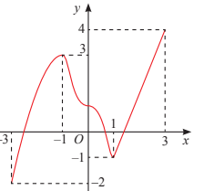 Giá trị lớn nhất $M$ và giá trị nhỏ nhất $m$ của hàm số $f(x)$ trên $[-3;3]$ lần lượt là
Question 24. Cho hàm số $y = f(x)$ liên tục trên $\mathbb{R}$ thỏa mãn giá trị nhỏ nhất của hàm số trên $\mathbb{R}$ là 5. Khẳng định nào sau đây là đúng?
Question 25. Cho hàm số $f(x)$ liên tục trên [-1;5] và có đồ thị như hình vẽ bên dưới. Gọi $M$ và $m$ lần lượt là giá trị lớn nhất và nhỏ nhất của hàm số đã cho trên [-1;5]. Giá trị của $M - m$ bằng 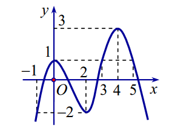
Question 26. Cho hàm số $y = f(x)$ có bảng biến thiên như hình vẽ. Hãy chọn khẳng định đúng?
Question 27. Cho hàm số $f(x)$ liên tục trên đoạn [-2;2] có đồ thị như hình vẽ 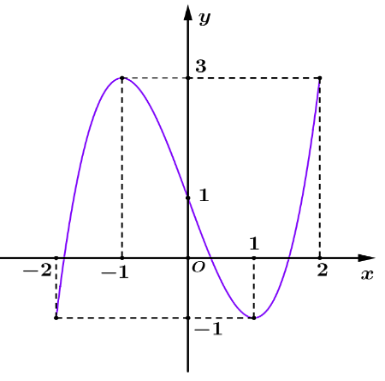 Giá trị nhỏ nhất của hàm số trên đoạn [-2;2] là
Question 28. Hình vẽ cho biết nhiệt độ trung bình các tháng năm 2020 tại Thành phố Hồ Chí Minh đo bằng đơn vị $^\circ\mathrm{C}$. Hãy cho biết trong năm 2020 tại Thành phố Hồ Chí Minh thì nhiệt độ trung bình của tháng nào cao nhất, nhiệt độ trung bình của tháng nào thấp nhất? 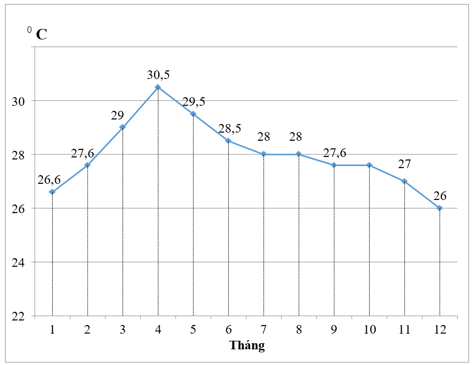
Question 29. Cho hàm số $f(x)$ xác định trên $D = \mathbb{R}$ có $f'(x) = 3$. Tìm mệnh đề đúng trong các mệnh đề sau?
Question 30. Độ giảm huyết áp của một bệnh được các bác sĩ xác định bởi công thức $G(x) = 0,025x^2 (30-x)$ trong đó $x$ là số miligam thuốc được tiêm cho bệnh nhân $(0 < x < 30)$. Để bệnh nhân đó có huyết áp giảm nhiều nhất thì liều lượng thuốc cần tiêm vào là
Question 31. Cho hàm số $y = \frac{x^2 + 4}{x}$, khi đó giá trị nhỏ nhất của hàm số trên khoảng $(0;+\infty)$ đạt được tại điểm nào?
Question 32. Cho hàm số $y = f(x)$ có đạo hàm trên $\mathbb{R}$, thỏa mãn $f'(x) = 2024 - \cos x, \forall x \in \mathbb{R}$. Khi đó, giá trị lớn nhất của hàm số $f(x)$ trên $[1;4]$ bằng
Question 33. Giá trị lớn nhất của hàm số $y = \log_2(x^2 +4)$ trên đoạn [-2;5] là
Question 34. Khi nuôi cá thí nghiệm trong hồ, một nhà khoa học đã nhận thấy rằng: nếu trên mỗi đơn vị diện tích của mặt hồ có $n$ con cá thì trung bình mỗi con cá sau một vụ cân nặng là $P(n) = 800-20n$ (g). Hỏi phải thả bao nhiêu con cá trên một đơn vị diện tích của mặt hồ để sau một vụ thu hoạch được nhiều cá nhất?
Question 35. Cho hàm số $f(x) = x^2 \ln x$
Question 36. Cho hàm số $y = x^2 - 3x + 2$. Các mệnh đề sau đây là đúng hay sai?
Question 37. Một vật chuyển động trên đường thẳng được xác định bởi công thức $s(t) = t^3 -3t^2 +7t-2$, trong đó $t > 0$ và tính bằng giây và $s$ là quãng đường chuyển động được của vật trong $t$ giây tính bằng mét. Khi đó:
Question 38. Một công ty bất động sản có 150 căn hộ cho thuê, biết rằng nếu cho thuê mỗi căn hộ với giá 2 triệu đồng mỗi tháng thì mỗi căn hộ đều có người thuê và cứ mỗi lần tăng giá cho thuê mỗi căn hộ thêm 100.000 đồng mỗi tháng thì có thêm 5 căn hộ bị bỏ trống. Mệnh đề nào sau đây đúng
Question 39. Tổng giá trị nhỏ nhất và giá trị lớn nhất của hàm số $g(x) = \frac{\ln x}{x}$ trên đoạn $[1;4]$ là... (làm tròn đến hàng trăm)
Question 40. Giá trị lớn nhất của hàm số $y = e^x (x^2 - x -5)$ trên đoạn $[1;3]$ bằng? Làm tròn đến hàng phần chục
Question 41. Hằng ngày mực nước của hồ thủy điện ở miền Trung lên và xuống theo lượng nước mưa, và các suối nước đổ về hồ. Từ lúc 8h sáng, độ sâu của mực nước trong hồ tính theo mét và lên xuống theo thời gian $t$ (giờ) trong ngày cho bởi công thức $h(t)=24t+5t^2 - \frac{t^3}{3}$. Biết rằng phải thông báo cho các hộ dân phải di dời trước khi xả nước theo quy định trước 5 giờ. Hỏi cần thông báo cho hộ dân di dời trước khi xả nước mấy giờ. Biết rằng mực nước trong hồ phải lên cao nhất mới xả nướ
Question 42. Giá trị lớn nhất của hàm số $y = \ln (\sqrt{x^2 + 4})$ trên đoạn $[0;\sqrt{5}]$ bằng $\ln a$. Giá trị của $a$ bằng
Question 43. Cho một tấm nhôm hình vuông cạnh $a = 12(\text{cm})$. Người ta cắt ở bốn góc của tấm nhôm đó bốn hình vuông bằng nhau, mỗi hình vuông có cạnh bằng $x(\text{cm})$, rồi gập tấm tôn lại như hình bên để được một cái hộp không nắp. Tính cạnh của hình vuông bị cắt sao cho thể tích của khối hộp là lớn nhất? 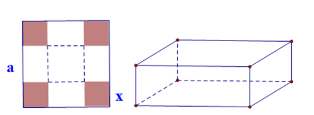
Question 44. Từ một miếng tôn dạng nửa hình tròn có bán kính $R = 4 \text{ dm}$, người ta muốn cắt ra một hình chữ nhật. Hỏi diện tích lớn nhất của hình chữ nhật có thể cắt được là bao nhiêu?
Question 45. Tiệm cận ngang của đồ thị hàm số $y = \frac{4x+1}{x-1}$ là
Question 46. Đường tiệm cận đứng của đồ thị hàm số $y = \frac{2x+3}{x-4}$ là
Question 47. Phương trình đường tiệm cận ngang của đồ thị hàm số $y = \frac{2x+1}{x-1}$ là
Question 48. Tiệm cận đứng của đồ thị hàm số $y = f(x) = \frac{x-2}{x+1}$ là:
Question 49. Cho hàm số $y = f(x)$ có đồ thị như hình vẽ. 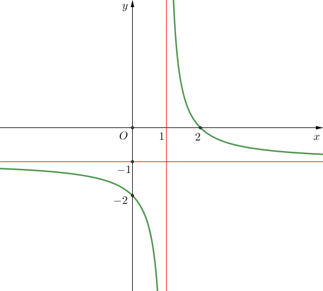 Đồ thị hàm số đã cho có đường tiệm cận ngang là
Question 50. Tiệm cận đứng của đồ thị hàm số $y = \frac{2x+5}{2x+4}$ là
Question 51. Cho hàm số $y = f(x)$ đồ thị hàm số như hình vẽ bên dưới. 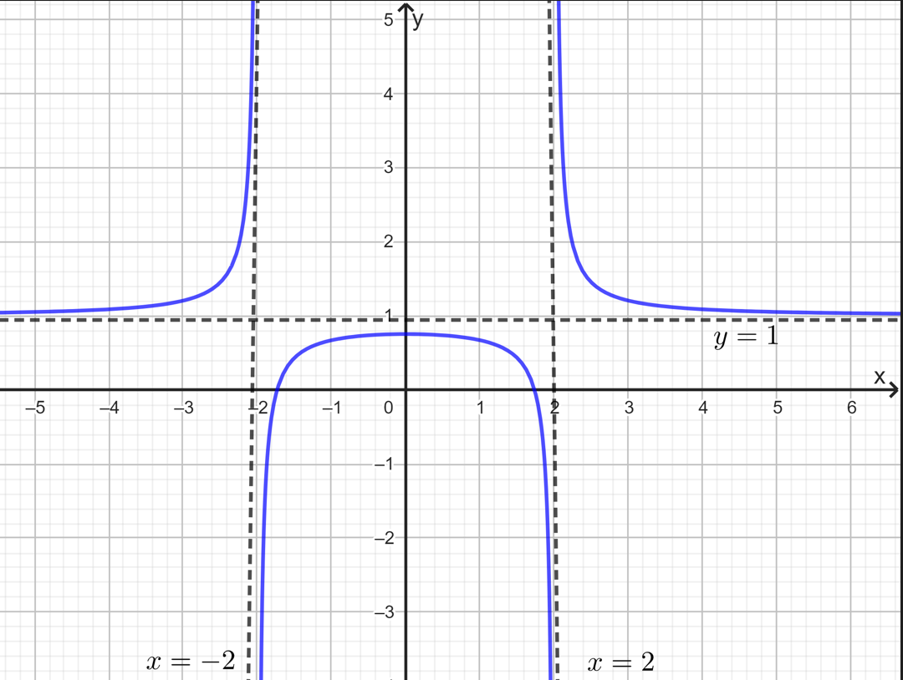 Số đường tiệm cận của đồ thị hàm số đã cho bằng
Question 52. Phương trình đường tiệm cận xiên của đồ thị hàm số $y = \frac{x^2-3x-1}{x+1}$ là
Question 53. Tiệm cận xiên của đồ thị hàm số $y = \frac{x^2+2x}{x+3}$ là:
Question 54. Tiệm cận xiên của đồ thị hàm số $y = \frac{x^2+x-3}{x-1}$ là:
Question 55. Chi phí (đơn vị: nghìn đồng) để sản xuất $x$ sản phẩm của một công ty được xác định bởi hàm số $F(x) = 60000 + 250x$. Gọi $\overline{F}(x)$ là hàm số biểu thị chi phí trung bình (đơn vị: nghìn đồng) để sản xuất $x$ sản phẩm ($x \ge 0$), khi đó tiệm cận ngang của đồ thị hàm số bằng
Question 56. Một công ty chuyên sản xuất đồ gia dụng ước tính chi phí để sản xuất $x$ (sản phẩm) là: $C(x) = 2x +50$ (triệu đồng), khi đó $G(x) = \frac{C(x)}{x}$ là chi phí sản xuất cho mỗi sản phẩm. Xem $G(x)$ là một hàm số xác định trên $[0;+\infty)$, số tiệm cận ngang của đồ thị hàm số $G(x)$ là
Question 57. Cho hàm số $y = f(x)$ có bảng biến thiên: 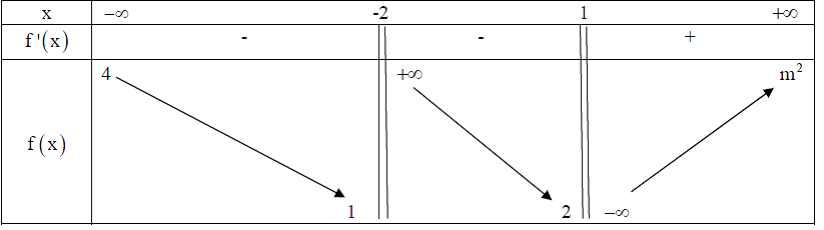 Các mệnh đề sau đúng hay sai?
Question 58. Cho hàm số $y = f(x)$ có đồ thị như hình vẽ bên dưới 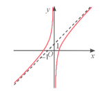 Xét tính đúng sai của các khẳng định sau:
Question 59. Cho hàm số $y = f(x) = x^4 - 2x^2 - 5$. Các khẳng định sau là đúng hay sai ?
Question 60. Trong 200 gam dung dịch muối nồng độ 15\%, giả sử thêm vào dung dịch $x$ (gam) muối tinh khiết và được dung dịch có nồng độ $f(x)\%$.
Question 61. Cho hàm số $y = \frac{x^2+2x+3}{\sqrt{x^4-3x^2+2}}$. Đồ thị hàm số đã cho có bao nhiêu đường tiệm cận?
Question 62. Chi phí xuất bản $x$ cuốn tạp chí (bao gồm: lương cán bộ, công nhân viên, giấy in...) được cho bởi $C(x) = x^2 – 2000x+10^8$ đồng. Chi phí phát hành cho mỗi cuốn là 4 nghìn đồng. $M(x) = \frac{T(x)}{x}$ với $T(x)$ là tổng chi phí (xuất bản và phát hành) cho $x$ cuốn tạp chí, được gọi là chi phí trung bình cho một cuốn tạp chí khi xuất bản $x$ cuốn. Khi số lượng cuốn tạp chí phát hành cực lớn thì chi phí trung bình cho mỗi cuốn tạp chí $M(x)$ sẽ tiệm cận với đường $y = ax + b$. Tổng các hệ số là
Question 63. Có bao nhiêu giá trị nguyên dương của tham số $m$ để đồ thị hàm số $y = \frac{x-1}{x^2-8x+m}$ có 3 đường tiệm cận?
Question 64. Cho hàm số $y = f(x) = ax^3 +bx^2 +cx+d$ $(a\neq0)$ có đồ thị như hình vẽ bên dưới 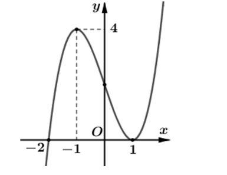 Tìm số đường tiệm cận đứng của đồ thị hàm số $g(x) = \frac{\sqrt{x}}{f(x^2-1)-4}$.
Question 65. Từ một tấm tôn hình chữ nhật có các kích thước là $x(\text{m}), y(\text{m})$ với $x >1$ và $y >1$ và diện tích bằng $4\text{m}^2$, người ta cắt bốn hình vuông bằng nhau ở bốn góc rồi gập thành một cái thùng dạng hình hộp chữ nhật không nắp (như hình vẽ) có chiều cao bằng $0,5\text{m}$. Thể tích của thùng là hàm số $V(x)$ trên khoảng $(1;+\infty)$. Đồ thị hàm số $y = \frac{1}{V(x)}$ có bao nhiêu đường tiệm cận đứng? 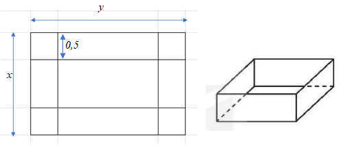
Question 66. Một khu vườn hình chữ nhật tiếp giáp với bờ sông được rào lại để làm vườn trồng hoa màu; biết phía bên bờ sông không cần hàng rào. Diện tích khu vườn là $1000(\text{m}^2)$. Hàng rào ở phía song song với sông có chi phí là 36.000 (đồng) trên một $\text{m}^2$, hàng rào ở hai phía còn lại (vuông góc với bờ sông) là 80.000 (đồng) trên một $\text{m}^2$. Bốn trụ ở bốn góc vườn có giá là 250.000 (đồng) mỗi trụ. Gọi $x$ là độ dài một cạnh vuông góc với bờ sông và hàm $C(x)$ mô tả chi phí của dự án. Phương trình đường tiệm cận xiên của đồ thị hàm số $y = C(x)$ là: $y = ax + b$. Tính $a+b$
Question 67. Bảng biến thiên trong hình dưới là đồ thị của một hàm số trong bốn hàm số được liệt kê ở bốn phương án A, B, C, D dưới đây. Hỏi hàm số đó là hàm số nào? 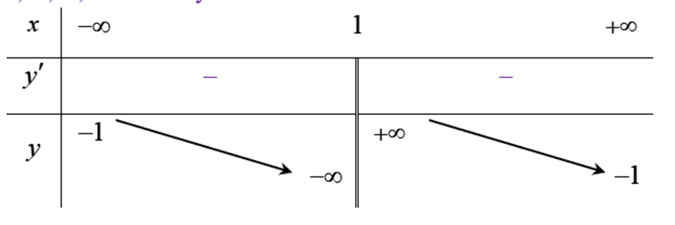
Question 68. Đồ thị trong hình sau là đồ thị của hàm số nào? 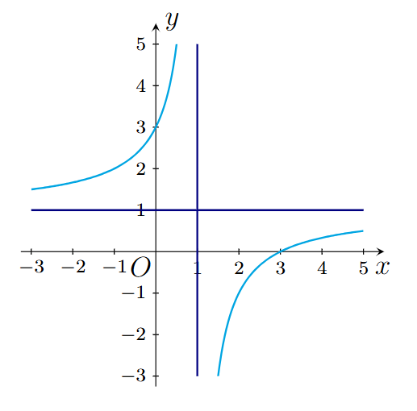
Question 69. Đường cong trong hình bên là đồ thị của hàm số 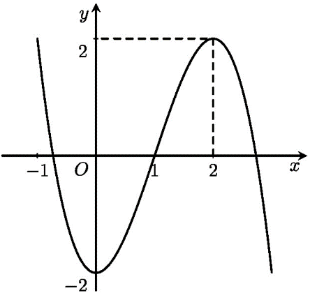
Question 70. Cho hàm số $y = f(x)$ xác định trên $\mathbb{R} \setminus \{-1\}$, liên tục trên mỗi khoảng xác định và có bảng biến thiên như hình sau 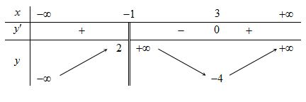 Số giao điểm của đường thẳng $y = 1$ và đồ thị của hàm số $y = f(x)$ là
Question 71. Đường cong trong hình bên là đồ thị của hàm số nào dưới đây? 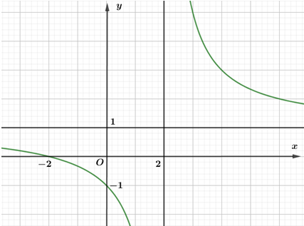
Question 72. Đồ thị của hàm số nào dưới đây có dạng như đường cong trong hình bên dưới? 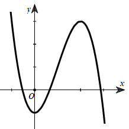
Question 73. Cho hàm số $y = \frac{ax + b}{cx + d}$, $(a,b,c,d \in \mathbb{R})$, trong đó $d > 0$ có đồ thị là đường cong trong hình sau. 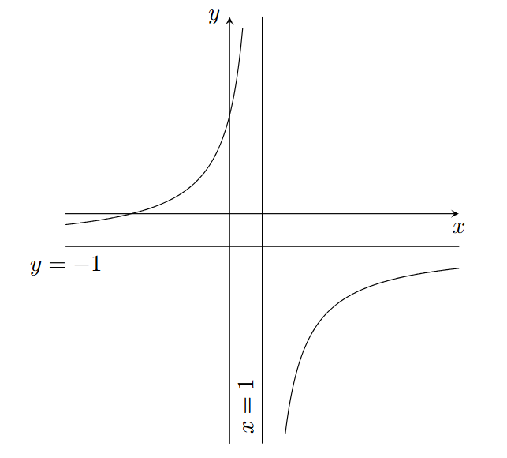 Trong các số $a,b,c$ có bao nhiêu số là số dương?
Question 74. Cho hàm số $y = f(x)$ có bảng biến thiên như sau: 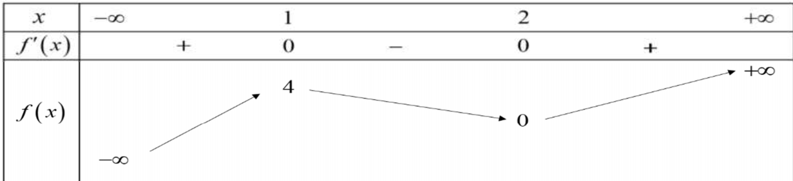 Có bao nhiêu giá trị nguyên của $m$, $m\in(-3;2024]$ để phương trình $2f(x)-m=0$ có một nghiệm?
Question 75. Đường cong trong hình bên là đồ thị của hàm số nào dưới đây? 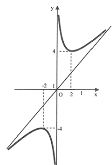
Question 76. Cho hàm số bậc ba $y=f(x)$ có đồ thị là đường cong trong hình bên. Số nghiệm thực của phương trình $f(x) = 0$ là. 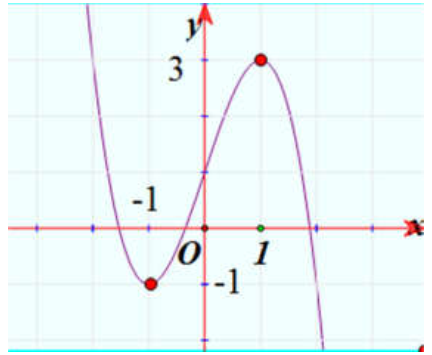
Question 77. Cho hàm số $y = f(x)$ có đồ thị như sau 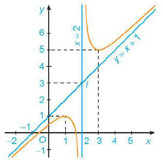 Khẳng định nào sau đây SAI?
Question 78. Một công ty sản xuất một sản phẩm. Bộ phận tài chính của công ty đưa ra hàm giá bán là $p(x) = 1000-25x$, trong đó $p(x)$ (triệu đồng) là giá bán của mỗi sản phẩm mà tại giá bán này có $x$ sản phẩm được bán r Khi đó hàm doanh thu của công ty là
Question 79. Cho hàm số $y = \frac{x+a}{bx + c}$ với $a,b,c \in \mathbb{Z}$ có đồ thị như hình vẽ dưới đây: 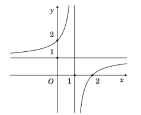 Các mệnh đề sau đúng hay sai?
Question 80. Cho hàm số phân thức hữu tỉ $f(x)=\frac{ax+b}{cx+d}$ $(cd \neq0,ad-bc < 0)$. Hãy xét tính đúng sai của các phát biểu sau:
Question 81. Cho hàm số $f(x) = \sqrt{x +3} + \sqrt{6-x}$
Question 82. Cho hàm số $y = \frac{x^2+(3m^2 -2)x-2}{x+3m}$ (1) với $m$ là số thực
Question 83. Biết đồ thị hàm số $(C): y = \frac{x^2-4x-5}{x+3}$ cắt trục tung tại điểm $M$. Tìm tung độ của điểm $M$. Kết quả là phân số tối giản, tính tổng tử và mẫu.
Question 84. Cho đồ thị hàm số $(C): y = \frac{x^2+x-1}{x-1}$ có tâm đối xứng là điểm $I(a;b)$. Tính $a + b$
Question 85. Cho hàm số $y = \frac{ax +2}{cx + b}$ có đồ thị như hình vẽ sau. Tính giá trị của biểu thức $S=a+b+c$. 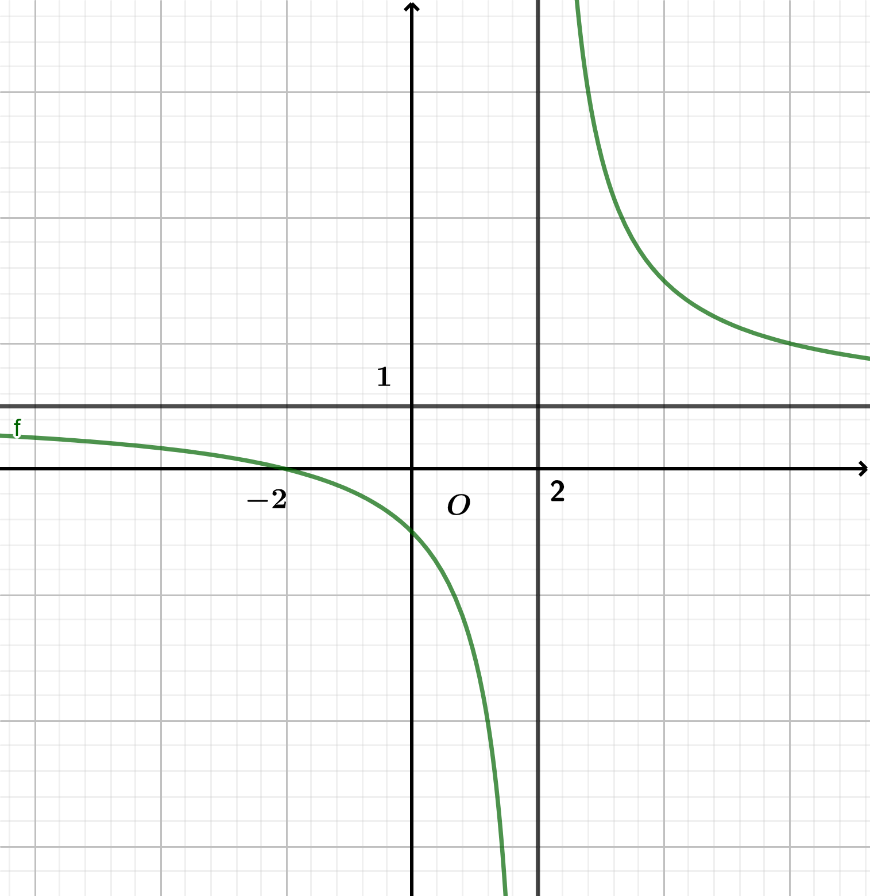
Question 86. Cho hàm số $y = f(x) = 2024^x – 2024^{-x} + x + \sin x$. Có bao nhiêu giá trị nguyên của tham số $m$ để phương trình $f (x+3)+ f (x^3-4x+m) = 0$ có đúng ba nghiệm phân biệt?
Question 87. Cho hàm số bậc bốn $y = f (x)$ có đồ thị là đường cong trong hình bên. 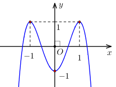 Số nghiệm thực phân biệt của phương trình $f (f(x)) = 0$ là
Question 88. Một rạp chiếu phim có sức chứa 800 người, trung bình mỗi ngày rạp có khoảng 360 khách với giá mỗi vé là 100.000đ. Nếu giá mỗi vé giảm 10.000đ thì mỗi ngày rạp có thêm 60 khách đến xem. Hỏi cần giảm giá vé đến bao nhiêu nghìn đồng để doanh thu của rạp là lớn nhất.
Question 89. Cho hình hộp $ABC EFGH$. Số vectơ có điểm đầu, điểm cuối là các đỉnh của hình hộp và bằng với vectơ $\vec{AD}$ là:
Question 90. Cho hình lập phương $ABC EFGH$. Vectơ $\vec{AB}$ bằng vectơ nào dưới đây?
Question 91. Cho tứ diện $ABCD$. Hỏi có bao nhiêu vectơ khác vectơ $\vec{0}$ mà mỗi vectơ có điểm đầu, điểm cuối là hai đỉnh của tứ diện $ABCD$?
Question 92. Cho hình lập phương $ABC A'B'C'D'$. Vectơ có điểm đầu và điểm cuối là các đỉnh của hình lập phương $ABC A'B'C'D'$ và bằng vectơ $\vec{AD}$ là 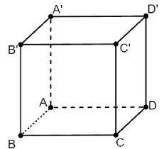
Question 93. Cho hình hộp $ABC EFGH$. Số vectơ khác $\vec{0}$ có điểm đầu, điểm cuối là các đỉnh của hình hộp và cùng phương với vectơ $\vec{AD}$ là:
Question 94. Gọi $I$ là trung điểm của $AB$. Khẳng định nào sau đây sai?
Question 95. Cho hình lăng trụ $AB A'B'C'$, $M$ là trung điểm của $BB'$. Đặt $\vec{CA}=\vec{a}, \vec{CB}=\vec{b}, \vec{AA'} =\vec{c}$. Khẳng định nào sau đây đúng?
Question 96. Cho tứ diện $ABCD$ có $AB = AC = AD$ và $\widehat{BAC} = \widehat{BAD} = 60^\circ$. Hãy xác định góc giữa cặp vectơ $\vec{AB}$ và $\vec{CD}$?
Question 97. Cho tứ diện $ABCD$. Mệnh đề nào dưới đây là mệnh đề đúng?
Question 98. Cho hình hộp $ABC A'B'C'D'$ với tâm $O$. Hãy chỉ ra đẳng thức sai trong các đẳng thức sau đây
Question 99. Cho hình hộp chữ nhật $ABC A'B'C'D'$ có $AB = a; AD = 2a; AA' = a\sqrt{3}$. Tính độ dài véctơ $\vec{D'C'} + \vec{AD} + \vec{BB'}$
Question 100. Một tấm gỗ tròn được treo song song với mặt phẳng nằm ngang bởi ba sợi dây không giãn xuất phát từ điểm $O$ trên trần nhà và lần lượt buộc vào ba điểm $A,B,C$ trên tấm gỗ tròn sao cho các lực căng $\vec{F_1}, \vec{F_2}, \vec{F_3}$ lần lượt trên mỗi dây $OA,OB,OC$ đôi một vuông góc với nhau và có độ lớn $|\vec{F_1}| = |\vec{F_2}| = |\vec{F_3}|=10(\text{N})$ (xem hình vẽ). 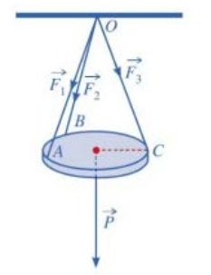 Tính trọng lượng $P$ của tấm gỗ tròn đó.
Question 101. Cho hai vectơ $\vec{a},\vec{b}$ thỏa mãn $|\vec{a}|=1, |\vec{b}|=3$, góc giữa $\vec{a}$ và $\vec{b}$ bằng $45^\circ$. Các mệnh đề sau đúng hay sai?
Question 102. Cho tứ diện đều $ABCD$. Gọi $G$ là trọng tâm của tam giác $BCD$. Xét tính đúng, sai của các mệnh đề sau đây:
Question 103. Cho hình chóp $S.ABCD$ có đáy $ABCD$ là hình thoi tâm $O$, cạnh bằng $a$, $\widehat{BAD} = 120^\circ$, $SA = SC, SB = SD$ và $SO = \frac{a\sqrt{3}}{2}$. Gọi $P$ là điểm trên đường thẳng $BD$ sao cho $BP = \frac{1}{3}BD$.
Question 104. Một chiếc đèn tròn được treo song song với mặt phẳng nằm ngang bởi ba sợi dây không dãn xuất phát từ điểm $O$ trên trần nhà lần lượt buộc vào ba điểm $A, B, C$ trên đèn tròn sao cho tam giác $ABC$ đều (Hình 38). Độ dài của ba đoạn dây $OA,OB,OC$ đều bằng $L$. Trọng lượng của chiếc đèn là $24 \text{ N}$ và bán kính của chiếc đèn là $18 \text{ in}$ $(1 \text{ inch} = 2,54\text{cm})$. Gọi $F$ là độ lớn của các lực căng $\vec{F_1},\vec{F_2},\vec{F_3}$ trên mỗi sợi dây. Khi đó, $F = F(L)$ là một hàm số với biến số là $L$. 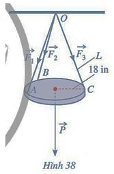 Xác định tính đúng, sai mỗi mệnh đề sau
Question 105. Cho hình hộp chữ nhật $ABC A'B'C'D'$ có $AB = 2a, AD = 3a$. Độ dài vectơ $\vec{B'D'}$ bằng? Tính bình phương hệ số của kết quả nhận đượ
Question 106. Cho hình chóp $O.ABC$ có ba cạnh $OA, OB, OC$ đôi một vuông góc và $OA = OB = OC = a$. Gọi $M$ là trung điểm cạnh $AB$. Tính góc tạo bởi hai vectơ $\vec{AC}$ và $\vec{OM}$ ?
Question 107. Cho hình hộp đứng $ABC EFGH$ có $AB = 5, AD = 6, AE = 10$ và $\widehat{ABC}=120^\circ$. Gọi $M$ là trọng tâm của tam giác $AFH$. Độ dài của vectơ $\vec{EM}$ bằng bao nhiêu (làm tròn kết quả đến hàng phần chục)?
Question 108. Cho hình lăng trụ đứng $AB A'B'C'$ với đáy $ABC$ là tam giác vuông tại $A$. Gọi $H,G$ là trung điểm của $A'C, AK$ với $K$ là hình chiếu của $A$ lên $BC$. Biết $AA' = AB = 2, AC = 2\sqrt{3},$. Tính $|\vec{A'G}+\vec{AH}|$?
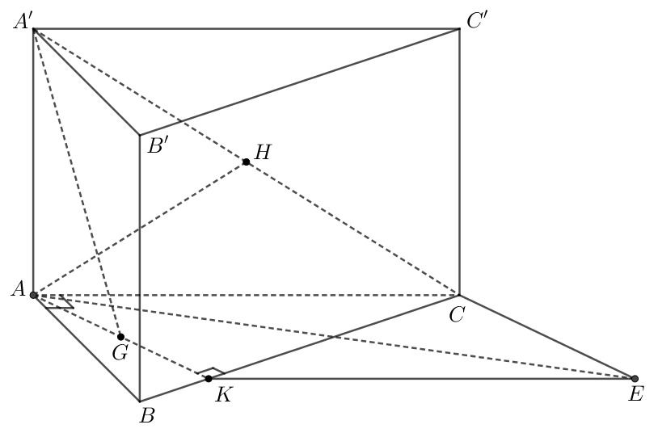
+\vec{AH}$ và độ dài của nó.
}
Question 109. Một chiếc đèn chùm có khối lượng $m =10(\text{kg})$ được thiết kế với đĩa đèn được giữ bởi bốn đoạn cáp $SA, SB, SC, SD$ cùng chất liệu và không đàn hồi sao cho $S.ABCD$ là hình chóp tứ giác đều (xem hình vẽ). Biết rằng gia tốc rơi tự do là $g = 10(\text{m/s}^2)$ 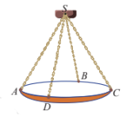 Tìm độ lớn của lực căng (đơn vị $(\text{N})$) của mỗi sợi dây cáp.
Question 110. Một chiếc đèn tròn được treo song song với mặt phẳng nằm ngang bởi ba sợi dây không dãn xuất phát từ điểm $O$ trên trần nhà lần lượt buộc vào ba điểm $A,B,C$ trên đèn tròn sao cho tam giác $ABC$ đều. Độ dài của ba đoạn dây $OA, OB, OC$ đều bằng $L$. Trọng lượng của chiếc đèn là $27\text{N}$ và bán kính của chiếc đèn là $0,5\text{m}$. 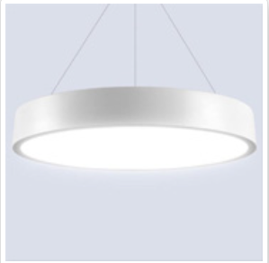 Tìm chiều dài tối thiểu của mỗi sợi dây, biết rằng mỗi sợi dây đó được thiết kế để chịu được lực căng tối đa là $12\text{N}$. (Chiều dài tính theo đơn vị cm và làm tròn đến 1 số sau phần thập phân)
Question 111. Trong không gian với hệ trục tọa độ $Oxyz$, cho $\vec{a} = -\vec{i}+2\vec{j}-3\vec{k}$. Tọa độ của vectơ $\vec{a}$ là
Question 112. Trong không gian với hệ tọa độ $Oxyz$, cho điểm $A(-4;1;3)$ và điểm $B(-7;1;-3)$. Tọa độ của $\vec{AB}$ là:
Question 113. Trong không gian với hệ trục tọa độ $Oxyz$, cho $\vec{a} = -\vec{i}-3\vec{k}$. Tọa độ của vectơ $\vec{a}$ là
Question 114. Trong không gian với hệ tọa độ $Oxyz$, cho hai điểm $A(1;3;4)$ và $B(0;1;2)$. Tọa độ của vectơ $\vec{BA}$ là
Question 115. Trong không gian $Oxyz$, cho hai điểm $A(-2;2;1)$, $B(0;1;3)$. Toạ độ của vectơ $\vec{AB}$ là
Question 116. Trong không gian với hệ tọa độ $Oxyz$, cho vecto $\vec{u} = 2\vec{i}-\frac{1}{2}\vec{j}+4\vec{k}$. Tọa độ của vectơ $\vec{u}$ là:
Question 117. Trong không gian $Oxyz$, cho điểm $A(1;2;3)$. Tìm tọa độ $A'$ là điểm đối xứng với $A$ qua trục $Oy$.
Question 118. Trong không gian $Oxyz$, cho tam giác $ABC$ có các điểm $A(1;0;3), B(2;3;-4), C(-3;1;2)$. Tìm toạ độ điểm $D$ sao cho tứ giác $ABCD$ là hình bình hành. 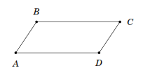
Question 119. Cho hình chóp $S.ABCD$ có đáy là hình vuông cạnh, $SA$ vuông góc với mặt phẳng đáy và $SA = 2$. Chọn hệ trục tọa độ $Oxyz$ có gốc $O$ trùng với điểm $A$, các điểm $B, D, S$ lần lượt nằm trên các tia $Ox, Oy, Oz$. Tìm tọa độ điểm $S$.
Question 120. Cho hình lập phương $ABC A'B'C'D'$ có cạnh bằng $a$. Lập hệ tọa độ $Oxyz$ có gốc $O$ trùng với đỉnh $B'$ và các vectơ đơn vị $\vec{i},\vec{j},\vec{k}$ lần lượt cùng chiều với các vectơ $\vec{B'A'}, \vec{B'C'}, \vec{B'B}$. Khi đó trong không gian $Oxyz$, điểm $D$ có tọa độ là
Question 121. Cho hình chóp $S.ABCD$ có đáy $ABCD$ là hình chữ nhật tâm $I$ có $AB = 2, AD = 3$ và $SA \perp (ABCD)$ và $SA =1$ và được gắn hệ trục tọa độ $Oxyz$ như hình vẽ với $A = O$. Tìm tọa độ vecto $\vec{SI}$. 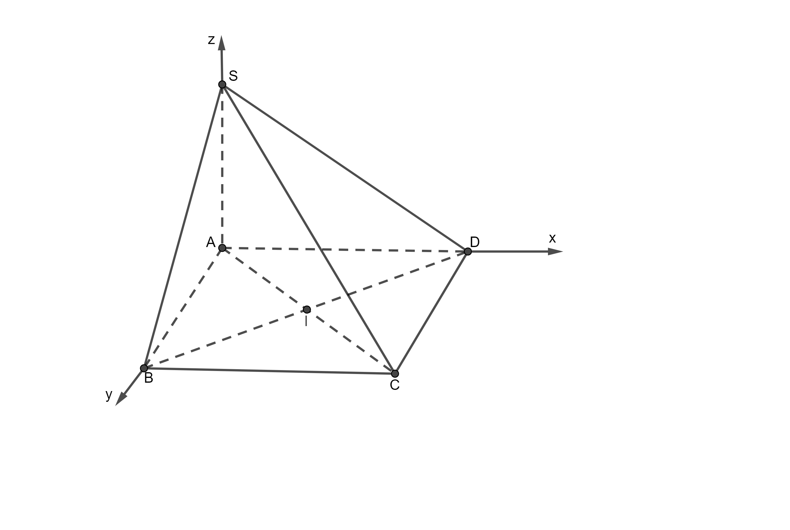
Question 122. Hai chiếc máy bay không người lái cùng bay lên tại một địa điểm. Sau một thời gian bay, chiếc máy bay thứ nhất cách điểm xuất phát về phía Bắc $20(\text{km})$ và về phía Tây $10(\text{km})$, đồng thời cách mặt đất $0,7(\text{km})$. Chiếc máy bay thứ hai cách điểm xuất phát về phía Đông $30(\text{km})$ và về phía Nam $25(\text{km})$, đồng thời cách mặt đất $1(\text{km})$.
Khoảng cách giữa hai chiếc máy bay thuộc khoảng nào sau đây?
Question 123. Trong không gian $Oxyz$, cho điểm $A(2;-2;1)$, $B$ nằm trên trục $Oy$ sao cho $OB = 2$.
Question 124. Trong không gian $Oxyz$, cho hình hộp $ABC A'B'C'D'$ có $A(1;0;1), B(2;1;2), D(1;-1;1), A'(1;1;-1)$ và $B'(b_1;b_2;b_3)$. Xét tính đúng sai của các phát biểu sau:
Question 125. Trong không gian $Oxyz$, cho điểm $A(1; -2;7)$.
Question 126. Hình minh hoạ sơ đồ một ngôi nhà trong hệ trục tọa độ $Oxyz$, trong đó nền nhà, bốn bức tường và hai mái nhà đều là hình chữ nhật. 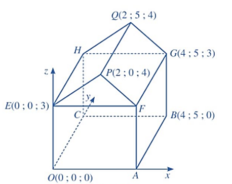 Xét tính đúng sai của các mệnh đề sau:
Question 127. Trong không gian $Oxyz$ cho hình lập phương $ABC A'B'C'D'$ có độ dài cạnh bằng 3. Chọn đỉnh $A$ trùng với gốc tọa độ, các vecto $\vec{AB}, \vec{AD}, \vec{AA'}$ theo thứ tự cùng hướng với $\vec{i}, \vec{j},\vec{k}$. Hoành độ của vectơ $\vec{AB}$ bằng?
Question 128. Trong không gian với hệ tọa độ $Oxyz$, cho hình hộp $ABC A'B'C'D'$ có $A(1;0;1), B(2;1;2), D(1;-1;1), C'(4;5;-5)$. Tính tọa độ đỉnh $A'$ của hình hộp? Tổng các tọa độ là
Question 129. Hình bên dưới mô tả một sân cầu lông với kích thước theo tiêu chuẩn quốc tế. Ta chọn hệ trục $Oxyz$ cho sân đó như ở hình b (đơn vị trên mỗi trục là mét). Giả sử $AB$ là một trụ cầu lông để căng lưới. Toạ độ của vectơ $\vec{AB}(x; y; z)$. Tính $x + y + z$ 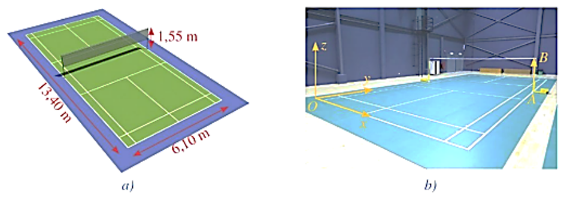
Question 130. Cho hình chóp $S.ABCD$ có đáy $ABCD$ là nửa lục giác đều, $AD=2, AB = BC =CD=1$, cạnh bên $SA$ vuông góc với mặt phẳng đáy. Gọi $M$ là trung điểm của $AD$. Biết khoảng cách giữa hai đường thẳng $SD$ và $BM$ bằng $\frac{3}{4}$. Người ta gắn hệ toạ độ $Oxyz$ với gốc toạ độ $O$ trùng với $A$, các vectơ $\vec{AS}, \vec{AD}$ cùng hướng với $\vec{k}, \vec{j}$ và $(\vec{i}, \vec{AB}) = 30^\circ$. Tính tổng cao độ của điểm $S$ và hoành độ của điểm $C$(làm tròn kết quả đến hàng phần chục).
Question 131. Ở một sân bay, vị trí của máy bay được xác định bởi điểm $M$ trong không gian $Oxyz$ như hình vẽ.Gọi $H$ là hình chiếu của $M$ xuống mặt phẳng $(Oxy)$. Cho biết $OM = 50, \widehat{(\vec{i}; \vec{OH})} = 60^\circ;\widehat{(\vec{OH}; \vec{OM})} = 60^\circ$. Tìm hoành độ $M$ 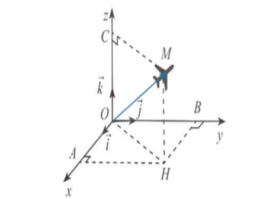
Question 132. Người ta cần lắp một camera phía trên sân bóng để phát sóng truyền hình một trận bóng đá, camera có thể di động để luôn thu được hình ảnh rõ nét về diễn biến trên sân. Các kĩ sư dự định trồng bốn chiếc cột cao $30 \text{ m}$ và sử dụng hệ thống cáp gắn vào bốn đầu cột để giữ camera ở vị trí mong muốn. Mô hình thiết kế được xây dựng như sau: Trong hệ trục toạ độ $Oxyz$ (đơn vị độ dài trên mỗi trục là $1\text{m}$), các đỉnh của bốn chiếc cột lần lượt là các điểm $M(90;0;30), N(90;120;30), P(0;120;30), Q(0;0;30)$. Giả sử $K_0$ là vị trí ban đầu của camera có cao độ bằng $25$ và $K_0M = K_0N = K_0P = K_0Q$. Để theo dõi quả bóng đến vị trí $A$, camera được hạ thấp theo phương thẳng đứng xuống điểm $K_1$ cao độ bằng $19$. 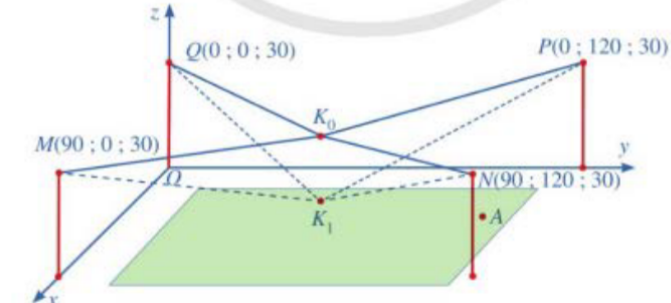 Tọa độ của vectơ $\vec{K_0K_1} =(a;b;c)$ với $a,b,c$ là các số thự Tính $P=a+b-c$?
Question 133. Trong không gian $Oxyz$, cho $\vec{u} = (5;-1;2)$ và $\vec{v} = (-1;2;1)$. Tọa độ của vectơ $\vec{u} - \vec{v}$ là
Question 134. Trong không gian $Oxyz$, có $\vec{u} = (1;-2;3); \vec{v} = (2;1; -1)$. Khi đó, tích $\vec{u}.\vec{v}$ bằng
Question 135. Trong không gian với hệ tọa độ $Oxyz$, cho hai điểm $A(2;-1;4), B(5;3;-8)$. Độ dài của vectơ $\vec{AB}$ là
Question 136. Trong không gian $Oxyz$ cho tam giác $ABC$ có $A(1;2;3), B(-3;4;1), C(5;0;-2)$. Tính độ dài cạnh $AB$?
Question 137. Trong không gian với hệ trục tọa độ $Oxyz$, cho hai vectơ $\vec{u}(x_1;y_1;z_1)$ và $\vec{v}(x_2;y_2;z_2)$. Trong các khẳng định sau, khẳng định đúng là
Question 138. Trong không gian $Oxyz$ cho hai điểm $A(-2;1;-3)$ và $B(1;0;-2)$. Độ dài đoạn thẳng $AB$ bằng
Question 139. Trong không gian với hệ trục tọa độ $Oxyz$, cho $\vec{OA}=2\vec{i}+2\vec{j}+2\vec{k}, B(-2; 2;0)$ và $C(4;1;-1)$. Trên mặt phẳng $(Oxz)$, điểm nào dưới đây cách đều ba điểm $A, B, C$.
Question 140. Trong không gian $Oxyz$, cho hình hộp $ABC A'B'C'D'$. Biết $A(1;0;1), C'(4;5;-5)$. Tìm tọa độ tâm $I$ của hình hộp.
Question 141. Trong không gian $Oxyz$, cho hai điểm $M (-5;2;3), I(2;3;1)$. Gọi $N$ là điểm đối xứng với $M$ qua $I$. Tính độ dài đoạn $ON$.
Question 142. Trong không gian hệ tọa độ $Oxyz$, cho $\vec{u} = (1;2;-1)$ và $\vec{v} = (2;3;0)$. Tính $[\vec{u},\vec{v}]$.
Question 143. Trong không gian với hệ tọa độ $Oxyz$, cho hai vectơ $\vec{u} = (3;-1;1)$ và $\vec{v} = (1;2;-2)$. Độ dài của vecto $\vec{u}+\vec{v}$ là
Question 144. Tính công sinh bởi lực $\vec{F} =(20;30;-10)$ (đơn vị: N) tạo bởi một drone giao hàng (xem hình bên dưới) khi thực hiện một độ dịch chuyển $\vec{d} = (150;200;100)$ (đơn vị: m). Cho biết công $A(J)$ sinh bởi một lực $\vec{F}$ có độ dịch chuyền $\vec{d}$ được tính bởi công thức $A = \vec{F}.\vec{d}.$ 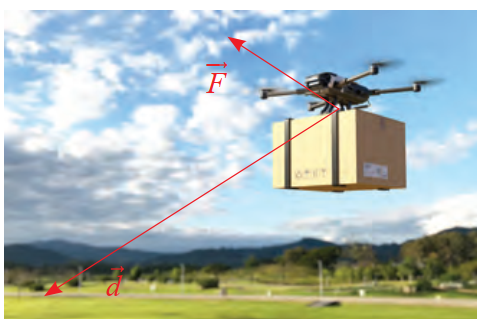
Question 145. Trong không gian $Oxyz$, cho $\triangle ABC$ với $A(1;2;3), B(4;5;6), C(2;7;4)$
Question 146. Trong không gian $Oxyz$, cho tam giác $ABC$ biết $A(2;-3;0), B(-2;1;-6)$ và $C(2;9;1)$.
Question 147. Trong không gian $Oxyz$, cho hình bình hành $ABCD$ có $A(0;0;-1), B(-1;1;0), C(1;0;1)$ và $M$ là điểm sao cho $3MA^2 + 2MB^2 – MC^2$ đạt giá trị nhỏ nhất.
Question 148. Trong không gian với hệ tọa độ $Oxyz$, cho điểm $A(2;0;0),B(0;2;0),C(0;0;2)$. Xét tính đúng sai của các mệnh đề sau?
Question 149. Trong không gian với hệ tọa độ $Oxyz$, cho các vectơ $\vec{a}=-3\vec{j}+\vec{k}$ và $\vec{b} = (1;m;6)$. Giá trị của $m$ để $\vec{a}$ vuông góc với $\vec{b}$ bằng
Question 150. Trong một phòng học được thiết kế dạng hình hộp chữ nhật, với chiều dài $8\text{m}$, chiều rộng $6\text{m}$ và chiều cao $3\text{m}$. Hai bạn An và Bình làm nhiệm vụ trực nhật, mạng nhện cần quét ở góc ngoài cùng trên trần nhà, An bảo không nên đứng ngay vị trí đó ở nền nhà quét vì sẽ bụi rơi xuông người mình, An lại đố bạn Bình ‘nếu mình đứng ở giữa nhà quét thì mình phải kéo chối quét nhà dài ra mấy mét ( làm tròn đến hàng phần trăm) để quét được vị trí mạng nhên, biết An cầm chổi cao $1,5\text{m}$’. Bình trả lời đứng vị trí đó chổi dài $5\text{m}$ cũng không tới. Hỏi Bình đã tính được bao nhiêu?
Question 151. Một chiếc khinh khí cầu bay lên từ địa điểm cho trướ Sau khoảng thời gian bay, chiếc khinh khí cầu cách địa điểm xuất phát $2,5\text{km}$ về hướng nam và $1,7\text{km}$ về hướng đông, đồng thời cách mặt đất là $0,6\text{km}$. Chọn hệ trục toạ độ $Oxyz$ với gốc $O$ đặt tại điểm xuất phát của chiếc khinh khí cầu, mặt phẳng $(Oxy)$ trùng với mặt đất, trục $Ox$ hướng về nam, trục $Oy$ hướng về phía đông và trục $Oz$ hướng thẳng đứng lên trời, đơn vị đo lấy theo kilomet. Tính khoảng cách từ địa điểm xuất phát đến địa điểm hiện tại của khinh khí cầu (đơn vị lấy theo kilomet và làm tròn đến 2 chữ số sau phần thập phân)
Question 152. Trong không gian với hệ tọa độ $Oxyz$, cho vec tơ $\vec{u}(1;1;-2), \vec{v}(1;0;m)$. Tìm $m$ để góc giữa $\vec{u}, \vec{v}$ bằng $45^\circ$. Kết quả là $a -\sqrt{b}$, giá trị $a+b$ là
Question 153. Cho hình chóp $S.ABC, SA \perp (ABC), SA = \frac{3a}{2}$. $\triangle ABC$ là tam giác đều cạnh $a$. Khi đó, góc tạo bởi hai mặt phẳng $(SBC)$ và $(ABC)$ là
Question 154. Cho biết bốn đoạn thẳng nối từ một đỉnh của tứ diện đến trọng tâm mặt đối diện luôn cắt nhau tại một điểm gọi là trọng tâm của tứ diện đó. Một phân tử metan $CH_4$ được cấu tạo bởi bốn nguyên tử hydrogen ở các đỉnh của một tứ diện đều và một nguyên tử carbon ở trọng tâm của tứ diện. Góc liên kết là góc tạo bởi liên kết $H-C-H$ là góc giữa các đường nối nguyên tử carbon với hai trong số các nguyên tử hydrogen. Tìm độ lớn góc liên kết này. Làm tròn đến hàng đơn vị